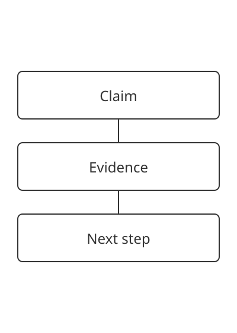

Editorial systems for complex ideas.
A clear structure gives strong work room to speak.
Northline editorial desk · 4-minute read
Start with the reading order
A page first makes a promise, then supplies evidence. Headings help readers find that evidence without reading every line.
Keep the article in source order. A narrow screen changes the arrangement, but the argument still moves from claim to evidence.
Give the figure a job
This figure maps the relationship between a claim and its supporting proof. Its caption explains the same relationship in text.
A useful layout makes the argument easier to follow.
